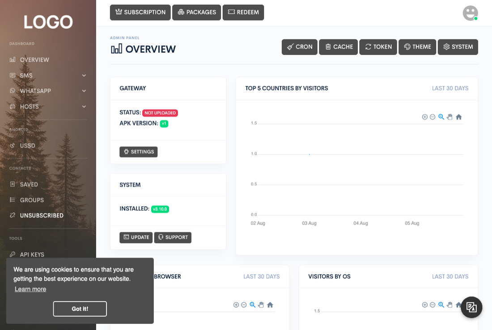
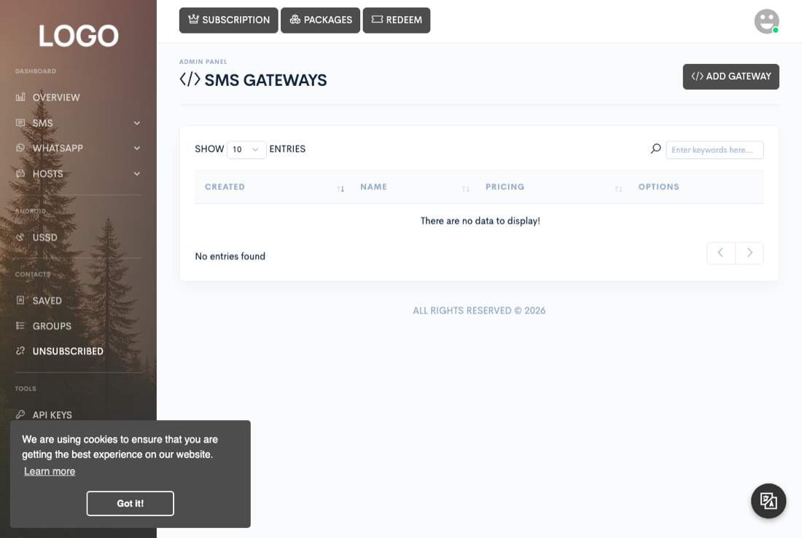

Administration
System settings
Configure the infrastructure and content your installation runs on: site identity and branding, SMS gateways, link shorteners, languages, custom pages, marketing broadcasts, and WhatsApp servers.


Site settings
The Settings button on Admin → Overview, visible only
to the super admin, opens the general configuration screen for the whole
installation: site name and description, purchase code, protocol, default language
and country, usage-reset cadence (daily or monthly — keep this in sync with
your cron schedule for the quota job, see Cron jobs), outgoing mail
(native PHP mail or your own SMTP server), payment settings (offline/bank-transfer
toggle, system currency, the bank-transfer instructions shown to customers), social
login, and a handful of security options (registration on/off, reCAPTCHA, AI content
moderation, minimum and maximum message length, the footer mark appended to
messages). It's also where you set the partner commission (the cut
the platform takes from every message sent through a shared device, 1–80%) and
the partner minimum payout (the earnings balance a partner needs
before they can request a cash-out) — see the Android gateway and Billing pages
for how those play out from the partner's and the admin's side. This same screen
also has the on/off switch and per-action toggles for the remote administration API
covered on the REST API page, and the button to regenerate its token.
Theme settings and branding
The Theme button next to Settings, also super-admin only, controls how the dashboard looks for every user: the default light/dark scheme, your own light-mode and dark-mode logo images, a favicon, a background image, and three accent colors. Two free-form text boxes let you inject your own CSS and JavaScript across the dashboard for further customization beyond what the color pickers cover.
SMS gateways
Admin → Gateways registers the controllers that actually send SMS through a given provider. A gateway isn't built into Zender's core — adding one means uploading a single PHP file through Add gateway along with a name, a pricing table (edited as JSON in the modal's code editor), and a callback mode. This list ships empty; SMS gateway controllers are published separately by Titan Systems as individual downloadable files, and you install one by downloading it and uploading it here.
Link shorteners
Admin → Shorteners works the same way as gateways: Add shortener uploads a single PHP controller file. This list also ships empty, and shortener controllers are published the same separate way as gateway controllers.
Managing languages
Admin → Languages manages the translation sets users can pick for their account. Adding a language takes a name, an ISO country code (used for its flag), a right-to-left flag, and a block of translation strings pasted directly into a textarea — there's no file upload here, the translation content is submitted as text. Deleting a language removes it and its compiled translation file; the reserved default language can't be deleted. The sort button next to Add language reorders the list; it doesn't change what's installed.
Where to get translations
Ready-made translations for 31 languages are published at
github.com/titansys/zender-languages.
Browse to the language you want, open its .lang file, copy the whole
contents, and paste it into the translation box on Add language.
That's the entire process — there's no file to download or upload.
The files there are kept in step with each Zender release, so pick the ones matching
the version you're running. The changes/ folder lists exactly which
strings each version added — that's what you need if you've customised a
translation of your own and only want to top it up rather than replace it.
GitHub is the only place these files are published — the release ZIP does not
carry them, because they'd go stale the moment a translation was improved. The one
exception is the update package, which includes a
new-language-strings.lang listing just the strings that release added.
Creating custom pages
Admin → Pages creates standalone HTML pages served by Zender itself, outside the messaging dashboard — think a terms-of-service or FAQ page hosted on the same domain. Each page gets a name (its slug is auto-generated from the name), an HTML body edited in a code editor, a set of roles allowed to see it, and a require login toggle. A page created with login not required is served publicly; one that requires login is only reachable through the dashboard once signed in. The slug in the URL has to match exactly, or the visitor is redirected to a not-found page.
Broadcasting to customers with Marketing
Admin → Marketing sends one-off broadcasts to customers through three channels, each its own dialog:
- Push — an Android push notification (title, message, optional image) delivered to every Android device belonging to the targeted users.
- Notify — a browser notification (title, message, colour, optional image) shown to targeted users who have the dashboard open. This one needs realtime notifications configured; without a realtime provider the broadcast is still recorded in the marketing log, but nobody's browser is told about it.
- Mailer — an HTML email (subject plus a rich-text body) sent to the targeted users' account email addresses.
All three target by a combination of specific users and/or specific roles (selecting a role expands to every user currently holding it); at least one specific user or role has to be chosen — leaving both pickers on their default "None" selection is rejected. There's no "send to everyone" shortcut — broadcasting to the whole user base means selecting every role. The trash icon bulk-deletes selected rows from the marketing log; it only removes the log entries, it doesn't recall a push, browser notification, or email that already went out.
A Notify broadcast never sends its text over the realtime connection. Each browser is told only that a broadcast exists, then asks the server for it over that user's own signed-in session, and anyone who wasn't a recipient gets nothing back — so the message can't be read by people it wasn't addressed to.
Registering WhatsApp servers
Admin → WA Servers registers the standalone WhatsApp server processes Zender talks to, and lets you cap how many accounts each one accepts and which subscription packages may use it. This is registration only, not linking — WhatsApp accounts themselves are linked from Hosts → WhatsApp, not from here. See WhatsApp server for the full setup, including running the binary and linking an account.